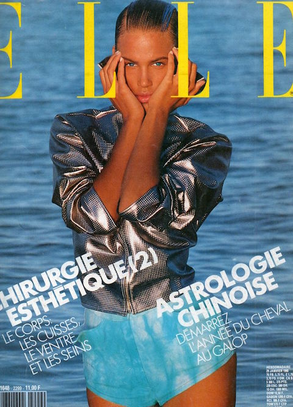

1990
1990 The Age of Creativity
When compared to the flashy style of the 80s, fashion in the 90s took a much more minimalist approach. Adults of the early 1990s wore relaxed fit jeans with plain T-shirts and knit sweaters while teenage and pre-teen girls often opted for brightly-colored neon clothing: hot pinks, greens, blues, oranges, and yellows.

HOME